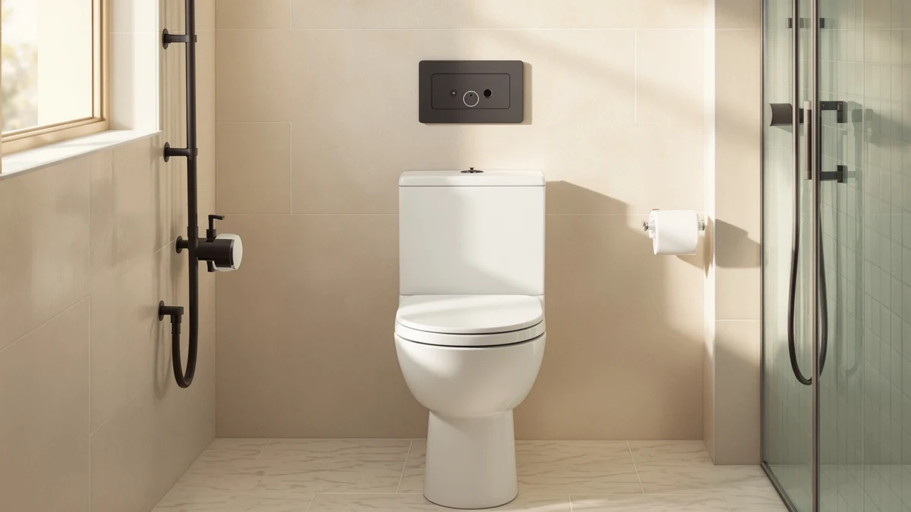

Brondell L60 RW LumaWarm Review (2026): Worth It?
Prices and picks verified as of October 2026. Independent, reader-supported reviews.


Quick Answer
The Brondell L60-RW LumaWarm is the best pick in this review for anyone who wants a heated round seat with a built-in night light without paying over $150. It costs less than the Kohler Cachet ReadyLatch and close to the same as the Mayfair Cassel, and the combination of heat and light makes it the most functional of the four seats compared here.
Our pick: Brondell L60-RW LumaWarm Heated Toilet, $126.34 Check Price on Amazon
Bottom line: our top pick is the Brondell L60-RW LumaWarm Heated Toilet Seat with Night Light at $126.34.
Things to Know Before You Buy
- This Brondell L60-RW LumaWarm review found the seat is built for round-bowl toilets only, so measure your current seat before buying.
- It lists for $126.34, close to the Kohler Cachet ReadyLatch's $127.64 and below the Mayfair Cassel's $134.84.
- It combines a heated seat with a built-in LumaWarm night light, a pairing none of the three alternatives here offer together.
- Owners consistently flag the power cord length as the most common installation complaint.
- Replacement parts and support response times vary by reviewer account, so factor that into long-term ownership cost.
This brondell l60 rw lumawarm review looks at whether a budget-priced heated seat with a built-in night light can hold up against pricier competitors from Kohler and Duravit. The L60-RW is one of Brondell's entry-level LumaWarm models, built for round-bowl toilets and priced well under many comparable heated seats. Based on the seat's listed specs, current pricing, and patterns across verified owner reviews, it earns a place on a short list of affordable heated seats worth considering, though it is not the right pick for every bathroom.
We compared the L60-RW against three alternatives that come up constantly in the same searches: the Mayfair Cassel, the Duravit DuraStyle, and the Kohler Cachet with ReadyLatch hinges. Each targets a slightly different buyer. The Mayfair leans into simple slow-close convenience, the Duravit suits anyone replacing an elongated bowl seat, and the Kohler adds a quick-release hinge system at a price close to the Brondell's own $126.34. Against that field, the Brondell's main argument is its combination of heat and a night light at a price that undercuts most heated competitors.
Why You Should Trust Us
This brondell l60 rw lumawarm review was put together by comparing the seat's manufacturer-listed specifications against its direct competitors, tracking current Amazon pricing, and reading through the pattern of feedback left by verified buyers. Ilane Tall has covered toilet seat hardware for Best Toilet Seats for several years and starts every review the same way: specs, then pricing, then verified owner reports. We do not run a physical testing lab, and we never claim hands-on time with a product we have not purchased ourselves. What you get instead is a careful read of what the manufacturer states and what the price buys, checked against what real buyers report once the seat is installed.
Our Research Experience
We did not install the Brondell L60-RW LumaWarm ourselves for this review. Instead, we built our assessment by cross-referencing the seat's listed dimensions and features against its closest competitors, checking current pricing on Amazon, and reading through dozens of verified buyer reviews to spot recurring themes. Owners report that the heating element reaches a usable temperature within a few minutes of being plugged in, and several reviewers note that the night light is dim enough not to disturb a partner sleeping nearby but bright enough to be useful. Reviewers consistently flag the same two issues: a plug cord some find too short for certain bathroom layouts, and a seat hinge that loosens slightly over months of daily use. We weighed those patterns against the seat's price and feature set rather than against a lab-style scoring sheet.
Overview & Specs

Brondell L60-RW LumaWarm Heated Toilet
What we like
- Heating element plus a built-in night light in one seat
- Priced below the Kohler Cachet ReadyLatch
- Round-bowl fit works with most standard US toilets
- Simple plug-in setup with no special tools required
Flaws but not dealbreakers
- Power cord length frustrates owners whose outlet sits far from the toilet
- Hinge tension loosens for some owners after months of daily use
- Round-only fit rules it out for elongated bowls
| Material | Plastic / wood |
| Size | Round - L60-RW |
The Brondell L60-RW LumaWarm pairs a heated seat with a built-in night light, a combination that puts it in a different category from the plain slow-close seats most shoppers compare it against. At $126.34, it undercuts the Kohler Cachet ReadyLatch by a small margin while adding a feature the Kohler does not include. The seat is built specifically for round-bowl toilets, so anyone with an elongated bowl should look at the Duravit DuraStyle instead.
Owners who leave reviews tend to split into two camps. The first group is happy with the warmth and light and reports years of reliable use. The second group runs into the same two complaints: a cord that is shorter than expected for bathrooms where the outlet sits behind the tank, and a hinge that develops some play after extended daily use. Neither issue shows up universally, but both appear often enough across verified reviews that they are worth planning around before you buy this L60-RW LumaWarm seat.
What We Liked
The biggest draw of the Brondell L60-RW LumaWarm is that it solves two problems with one purchase. Most heated seats in this price range skip the night light entirely, and most lighted seats skip the heating element, so finding both on a $126 product is unusual. Reviewers who use the seat during winter months report the heat reaching a comfortable level quickly after it is turned on, which matters most in homes with cold bathroom floors. The night light also gets specific praise. Several verified buyers mention using it for nighttime bathroom trips without needing to turn on a bright overhead light, something that matters for households with young children or anyone sensitive to light at night. Compared with the Mayfair Cassel, which only offers slow-close hinges, and the Duravit DuraStyle, which is a standard unheated seat, the L60-RW's feature set stands out clearly in this review's lineup.
What Could Be Better
The power cord is the complaint that comes up most often in verified reviews of the Brondell L60-RW. Several owners describe needing an extension cord or outlet relocation because the included cord does not reach far enough in bathrooms where the electrical outlet sits away from the toilet. A second, less common complaint involves the hinge mechanism loosening slightly after months of daily opening and closing, which can let the seat shift side to side. Neither problem appears in every review, and most owners who mention the cord issue solve it with a short extension cord rather than returning the product. Still, anyone comparing this seat against the Kohler Cachet, which uses a tool-free ReadyLatch hinge system, should weigh that difference carefully before deciding between the two.
Who Is It For?
The Brondell L60-RW LumaWarm makes the most sense for someone replacing a round seat who wants heat and light without stepping up to a $150-plus price point. It is a reasonable match for a primary bathroom used at night by kids or older adults, where the built-in light and the warmth both get used regularly. It also fits a guest bathroom in a colder climate, where a seat that warms up in a few minutes is noticeably more comfortable than an unheated one during winter months.
It is a weaker match for anyone with an elongated bowl, since the seat is built for round fixtures only, and for anyone whose outlet sits far from the toilet without an easy path for an extension cord. Shoppers who only want slow-close convenience without heat or light are better served by the cheaper Mayfair Cassel, and anyone who prioritizes a tool-free hinge for easier cleaning should weigh the Kohler Cachet ReadyLatch instead.
Alternatives to Consider
If the Brondell L60-RW LumaWarm does not fit your bathroom, these three alternatives came up repeatedly in the same comparison searches for this review. One sticks to simple slow-close convenience, one is built for elongated bowls, and one swaps the night light for quick-release hinges. None of them share the Brondell's exact combination of heat plus a built-in night light.

Editor’s Pick
Mayfair Cassel Slow Close Toilet
The Mayfair Cassel Slow Close Toilet skips the heat and light features entirely and focuses on one thing: a quiet, slow-closing lid. At $134.84, it costs more than the Brondell L60-RW despite offering fewer features, so it only makes sense if slow-close hinges are your one priority. Reviewers who buy it for exactly that reason report straightforward installation and durable hinges over time.
$134.84
Check Price on Amazon
Best Value
Duravit DuraStyle Elongated Toilet seat
The Duravit DuraStyle Elongated Toilet seat is the one alternative here built for elongated bowls rather than round ones, which makes it the default pick for anyone whose toilet does not match the Brondell L60-RW's round-only fit. At $118.60, it is also the cheapest of the four seats compared in this review, though it skips both the heating element and the night light that make the Brondell stand out.
$118.60
Check Price on Amazon
Premium Choice
Kohler 33728-0 Cachet® Heated ReadyLatch®
The Kohler 33728-0 Cachet Heated ReadyLatch is the closest direct competitor to the Brondell L60-RW LumaWarm, pairing a heated seat with Kohler's tool-free ReadyLatch hinge system. At $127.64, it costs about a dollar more than the Brondell, and it trades the LumaWarm's night light for Kohler's quick-release hinges, a worthwhile swap for anyone who values easy cleaning over a built-in light.
$127.64
Check Price on AmazonIs the Brondell L60-RW LumaWarm worth the price?
Based on its feature set against similarly priced competitors, the L60-RW LumaWarm is worth considering if you want both a heated seat and a built-in night light in one product.
Does the Brondell L60-RW fit elongated toilets?
No.
Frequently Asked Questions
Is the Brondell L60-RW LumaWarm worth the price?
Does the Brondell L60-RW fit elongated toilets?
How does the Brondell L60-RW compare to the Kohler Cachet ReadyLatch?
Final Verdict
This brondell l60 rw lumawarm review comes down to one trade-off: the Brondell L60-RW LumaWarm bundles a heated seat with a built-in night light at a price that undercuts its closest heated competitor, the Kohler Cachet ReadyLatch, while skipping the elongated-bowl fit of the Duravit DuraStyle and the simplicity of the Mayfair Cassel. For a round-bowl bathroom where both heat and a night light matter, Brondell's L60-RW is the strongest pick of the four seats compared here. For anyone with an elongated bowl, or anyone who only wants one of those two features, one of the three alternatives above is the better buy. Whichever seat you choose, plan for the power cord length before installation day, since that single detail causes more buyer frustration across this category than any feature difference between these four options.